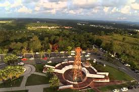
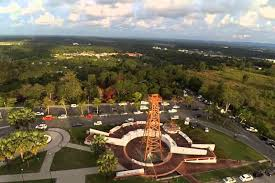

The history of Miri is also the history of Sarawak’s oil industry. The area had long been known for black oil that seeped from the ground, as noted by the Resident of Baram, Claude Champion de Crespigny, in 1882. One of de Crespigny’s successors, Dr Charles Hose, persuaded the Anglo Saxon Petroleum Company, a British subsidiary of Shell, to conduct exploratory drilling in the area, and on August 10 1910, the first oil was struck on a hill overlooking the small fishing village of Miri, at a depth of 123 metres. The well, subsequently christened the “Grand Old Lady”, continued to produce oil until 1972.
With the discovery of commercial quantities of oil, Miri was rapidly transformed from a sleepy fishing village to a booming oil town. By the mid 1920s it had become the administrative centre of the Baram region, and continued to thrive until the onset of World War 2. Shell staff did their best to sabotage the Miri oilfield, to prevent the invading Japanese forces from making use of it, but resourceful Japanese engineers soon had the field back to pre-war production levels.
The move offshore coincided with a boom in Sarawak’s timber industry, and Miri became a major timber processing and transhipment hub, so the economy of the town continued to grow throughout the 1970s and 80s. The tourism sector also began to take off, fuelled initially by weekend visitors from nearby Brunei. Miri continued to prosper throughout the 1990s, and in recognition of its booming population and crucial contributions to Sarawak’s economy, was granted City status on 13th May 2005.
 
